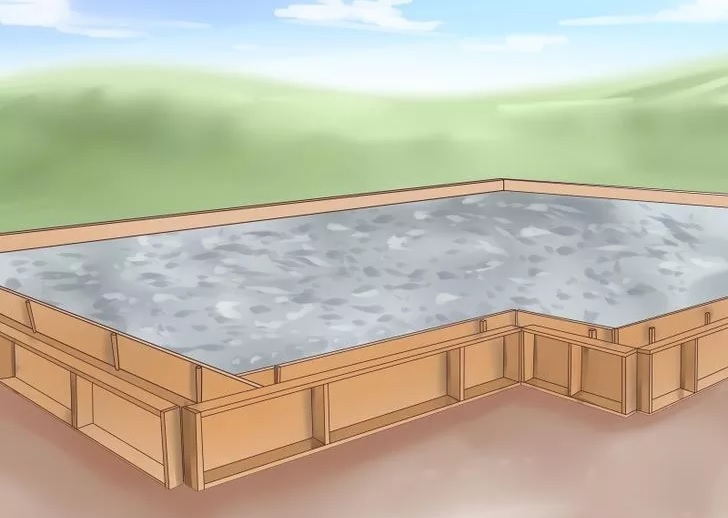
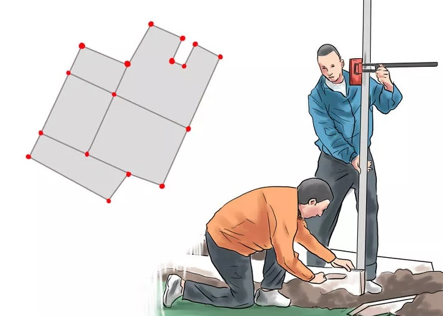

Lay the foundation. After a site crew excavates the plot, you'll begin the work of laying the foundation. The type and design of the foundation will depend upon the size of your house, the ground in which its laid, local building codes, and whether or not your home will have a basement. The most recommended and strongest type of foundation is concrete block. The excavation crew should first survey and stake the dimensions of the foundation and excavate it to the desired depth, then smooth it out to a workable surface, sometimes overlaying dirt or gravel to build upon.
Pour the concrete foundation on which to build. These are used to distribute the weight evenly and should be somewhat wider than the foundation walls, forming the perimeter of the home. Build the form work and fill in with concrete. The form work is basically a mold for concrete, used to pour into and remove after the concrete has set. Alternatively, a block foundation can be laid which won't be removed, in which case you'll inlay rebar into the block and fill in the gaps in the block with concrete. The thickness of the foundation should be determined carefully by a structural engineer, taking into consideration the height of the wall and the load it will be required to bear, both in terms of the building itself as well as the forces of gravity, wind, and earth that affect the structure.
Set up building lines. This means putting either batter boards or corner stakes at each corner of the house foundation to level and square up the foundation. Use a transit or building level to make sure the building lines are level and square, and check by measuring corner to corner, diagonally, to make sure the walls and corners are square.
Install your chosen type of floor. There are two common floor types, called "slab on grade" or "pier and beam/joist" floors. Before pouring the slab floor, you need to make sure you've installed rough plumbing lines so that they are accurately placed. After the slab is poured, it'll be too late to adjust. For a slab-on-grade floor, form up the footing to the proper specs and lay rebar. Generally, these floors are made on concrete block foundations. After installing your plumbing rough-ins, backfill around the foundation with dirt and gravel, compacting it appropriately. At this point, you may also want to pre-treat for termites and install moisture barrier. For off-grade or above-grade floors, lay out and install wooden flooring piers and install your floor joist framing system to the proper specifications. Install subfloor/finish floor decking.
 